OpenSSH
- OpenSSH
- 作用：可以通过
ssh的命令行方式去访问和操作越狱iPhone - 安装
Cydia/Sileo中搜：openssh，并安装，即可- Cydia
- 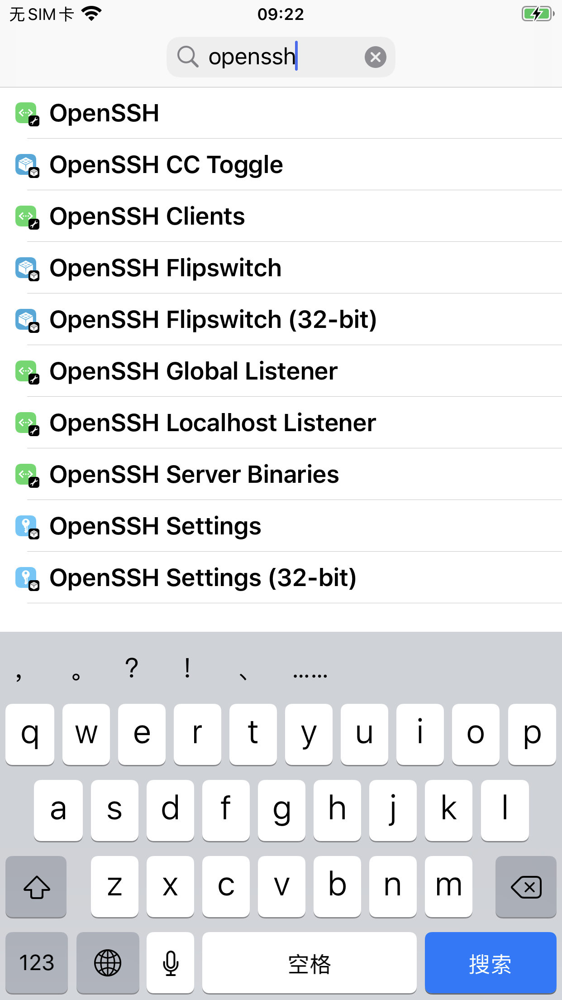
- Sileo
- 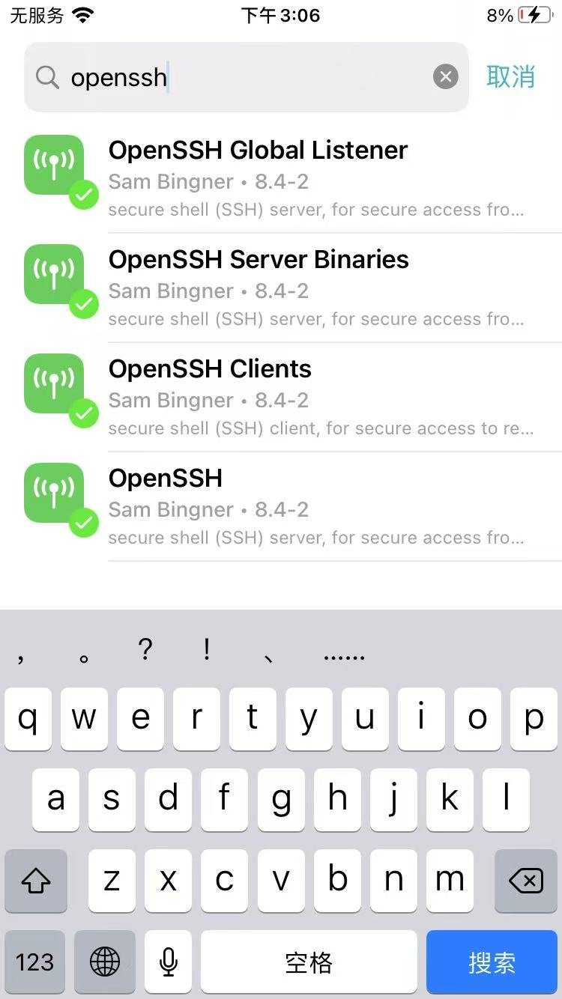
- Cydia
- 如何使用
ssh root@192.168.2.28- 说明
- iPhone要和电脑端（Mac）同处于一个WiFi局域网内
192.168.2.28是的iPhone的IP- 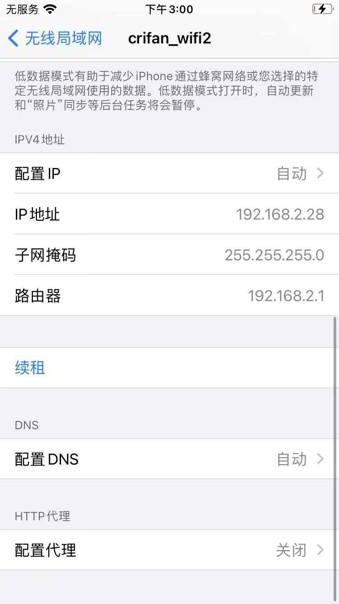
- 【首次=只需要初始化一次】
- 当出现提示
Are you sure you want to continue connecting (yes/no/[fingerprint])?- 输入：
yes
- 输入：
- 当出现提示
- OpenSSH的ssh的（默认）密码是：
alpine
- 说明
- ssh免密登录
- 概述
- 初始化好环境后，每次只需要
ssh-copy-id root@192.168.2.28
- 初始化好环境后，每次只需要
- 概述
- 作用：可以通过
ssh免密登录
此处详细介绍ssh免密登录的步骤：
注意：这些步骤，都是：首次=只需要初始化一次 == 后续无需重复操作
安装工具
先去Mac中安装ssh工具：
- openssh
brew install openssl - ssh-copy-id
brew install ssh-copy-id
生成证书
再去Mac中生成ssh证书：
ssh-keygen -t rsa -b 2048
其中密码为空，即对于：
Enter passphrase (empty for no passphrase):
直接回车即可，表示空密码
默认生成的证书是：
/Users/crifan/.ssh/id_rsa/Users/crifan/.ssh/id_rsa.pub
拷贝证书
然后去拷贝ssh证书（id_rsa.pub）到iPhone中：
其中iPhone的IP是：192.168.2.28
ssh-copy-id root@192.168.2.28
- 输入密码：
alpine- 首次=只需要输入一次
- 密码是对应的：
OpenSSH的ssh的root账号的密码- 注：更深层的说，另外还有个别的用户（比如，不常见的
mobile用户），还有别的密码
- 注：更深层的说，另外还有个别的用户（比如，不常见的
免密登录
之后即可ssh免密登录：
ssh root@192.168.2.28
==每次ssh，都不用再输入密码了
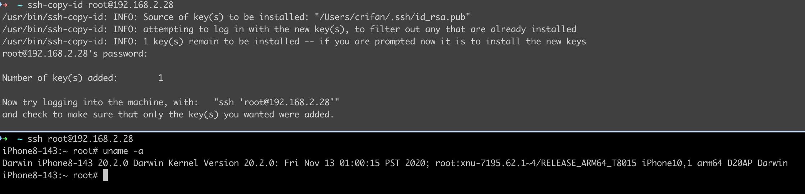
OpenSSH安装后
- 安装后
- 一般会默认安装5个插件
- 文字
OpenSSHOpenSSH ClientsOpenSSH Global ListenerOpenSSH Server BinariesOpenSSH 1.1.1 Libraries
- 图
- 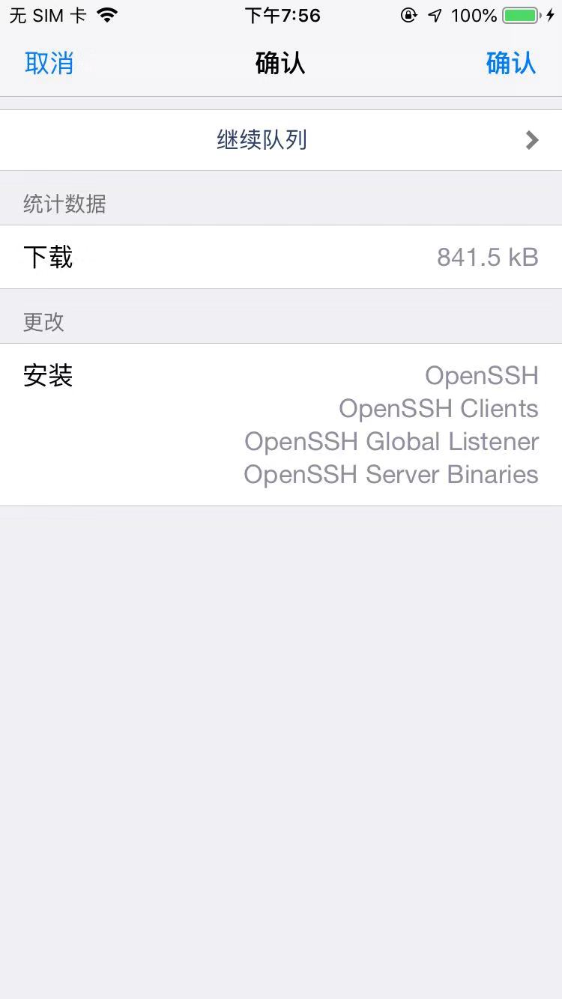
- 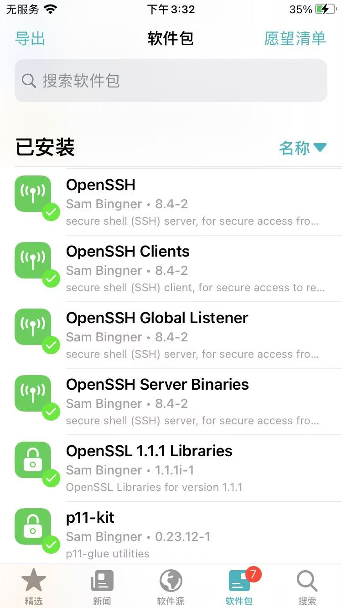
- 文字
- 插件主界面详情页
- Sileo
- 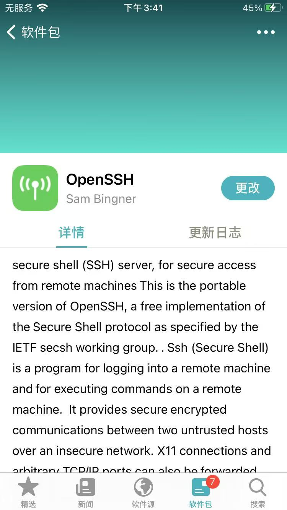
- 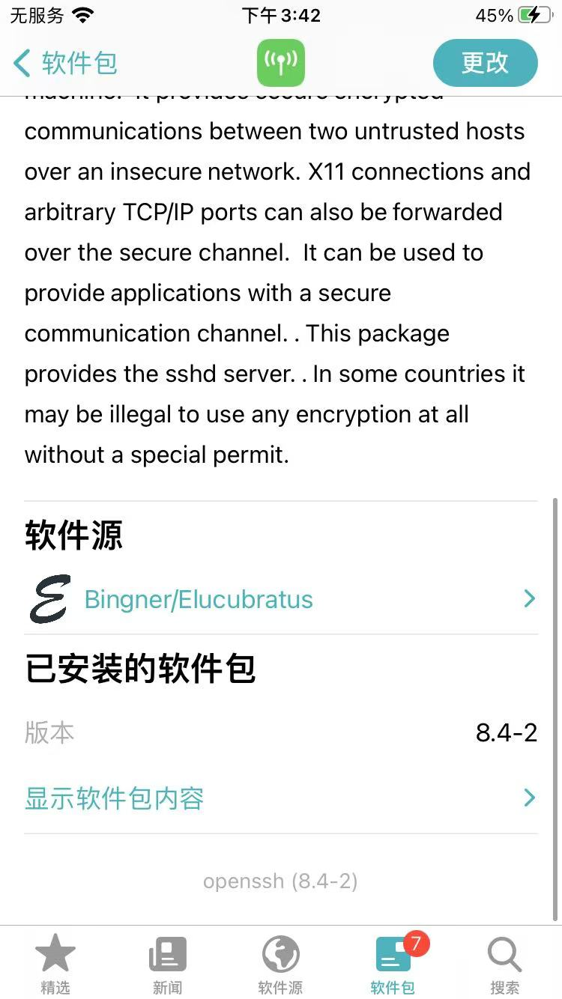
- Cydia
- 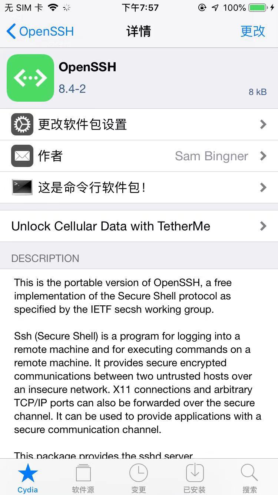
- 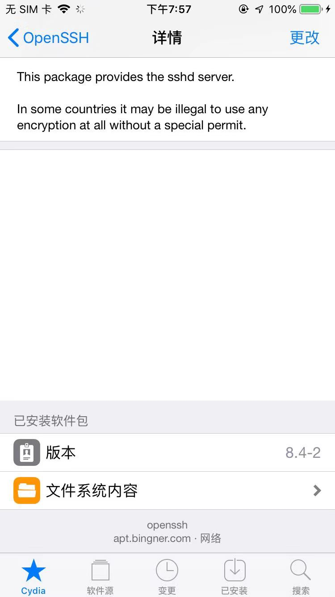
- Sileo
- 一般会默认安装5个插件
文档
- Cydia中都自带说明文档
- 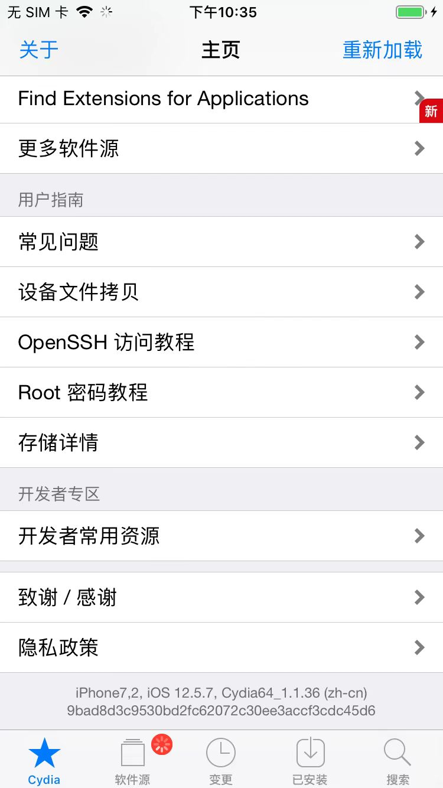
- 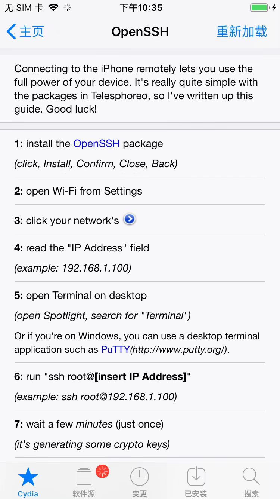
- 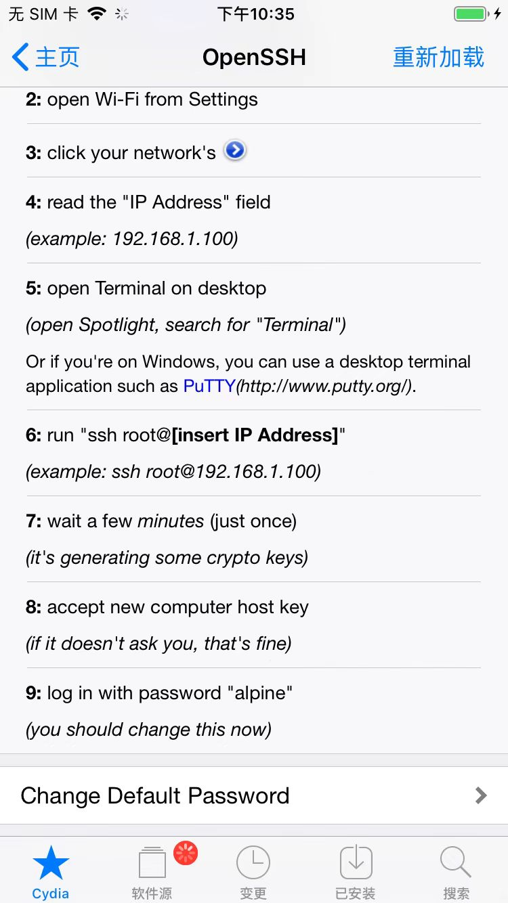
附录
ssh-keygen
➜ iOS_Tweak which ssh-keygen
/usr/bin/ssh-keygen
➜ iOS_Tweak ssh-keygen --version
ssh-keygen: illegal option -- -
usage: ssh-keygen [-q] [-b bits] [-C comment] [-f output_keyfile] [-m format]
[-N new_passphrase] [-t dsa | ecdsa | ed25519 | rsa]
ssh-keygen -p [-f keyfile] [-m format] [-N new_passphrase]
[-P old_passphrase]
ssh-keygen -i [-f input_keyfile] [-m key_format]
ssh-keygen -e [-f input_keyfile] [-m key_format]
ssh-keygen -y [-f input_keyfile]
ssh-keygen -c [-C comment] [-f keyfile] [-P passphrase]
ssh-keygen -l [-v] [-E fingerprint_hash] [-f input_keyfile]
ssh-keygen -B [-f input_keyfile]
ssh-keygen -D pkcs11
ssh-keygen -F hostname [-lv] [-f known_hosts_file]
ssh-keygen -H [-f known_hosts_file]
ssh-keygen -R hostname [-f known_hosts_file]
ssh-keygen -r hostname [-g] [-f input_keyfile]
ssh-keygen -G output_file [-v] [-b bits] [-M memory] [-S start_point]
ssh-keygen -f input_file -T output_file [-v] [-a rounds] [-J num_lines]
[-j start_line] [-K checkpt] [-W generator]
ssh-keygen -I certificate_identity -s ca_key [-hU] [-D pkcs11_provider]
[-n principals] [-O option] [-V validity_interval]
[-z serial_number] file ...
ssh-keygen -L [-f input_keyfile]
ssh-keygen -A [-f prefix_path]
ssh-keygen -k -f krl_file [-u] [-s ca_public] [-z version_number]
file ...
ssh-keygen -Q -f krl_file file ...
ssh-keygen -Y check-novalidate -n namespace -s signature_file
ssh-keygen -Y sign -f key_file -n namespace file ...
ssh-keygen -Y verify -f allowed_signers_file -I signer_identity
-n namespace -s signature_file [-r revocation_file]
ssh-copy-id
➜ iOS_Tweak which ssh-copy-id
/usr/bin/ssh-copy-id
➜ iOS_Tweak ssh-copy-id --version
/usr/bin/ssh-copy-id: ERROR: invalid option (--version)
Usage: /usr/bin/ssh-copy-id [-h|-?|-f|-n] [-i [identity_file]] [-p port] [[-o <ssh -o options>] ...] [user@]hostname
-f: force mode -- copy keys without trying to check if they are already installed
-n: dry run -- no keys are actually copied
-h|-?: print this help